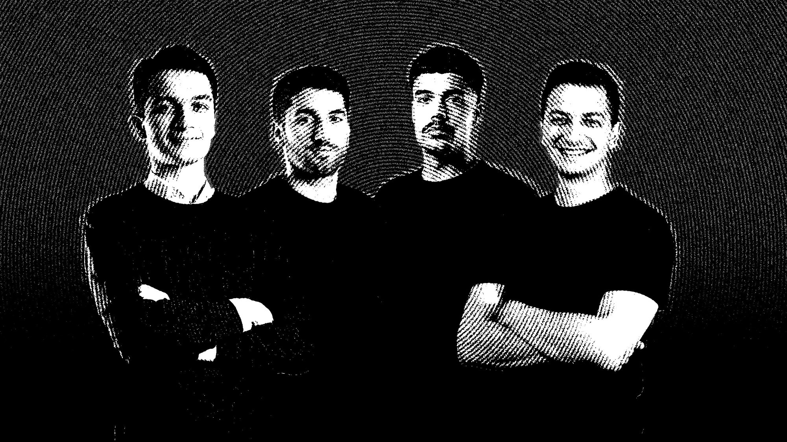
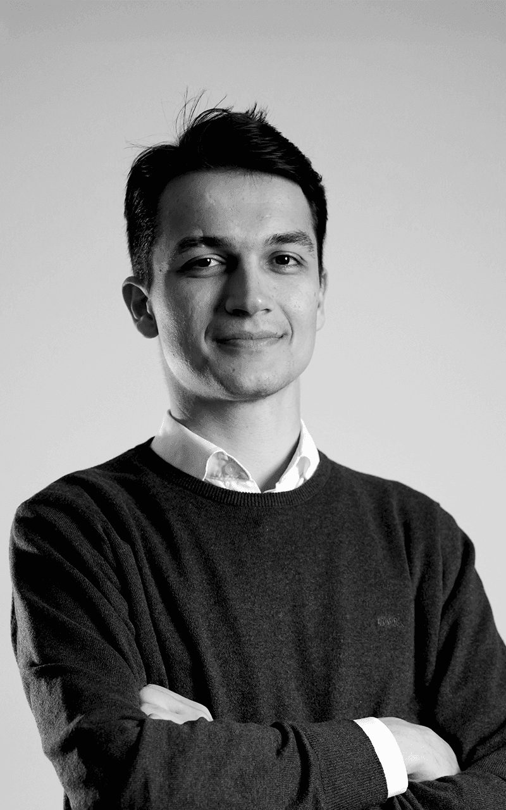
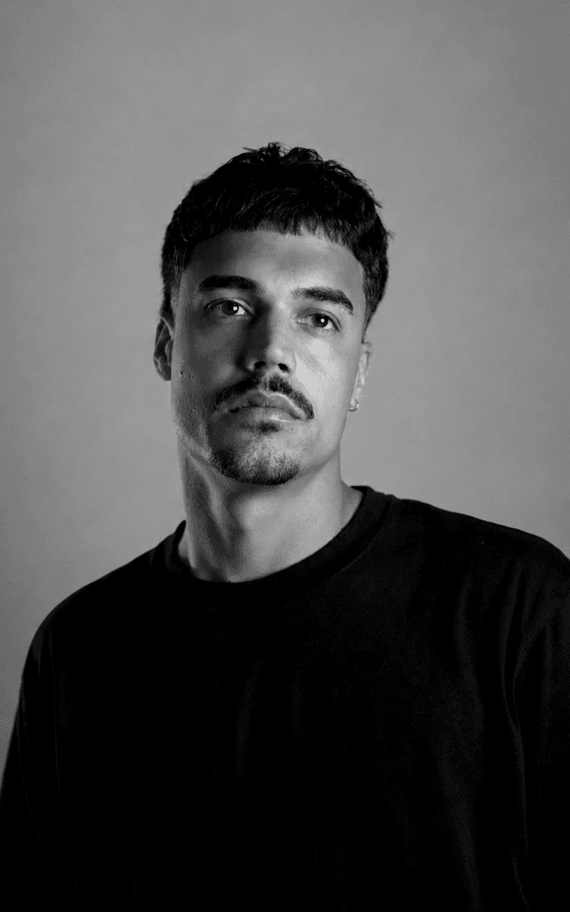
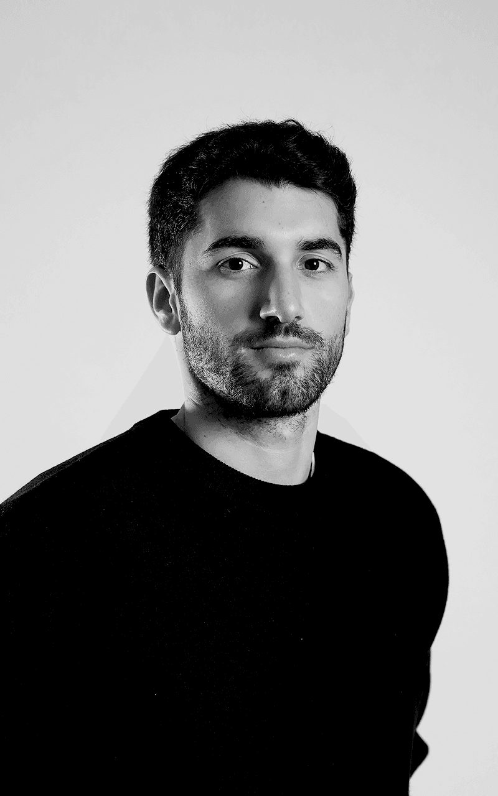
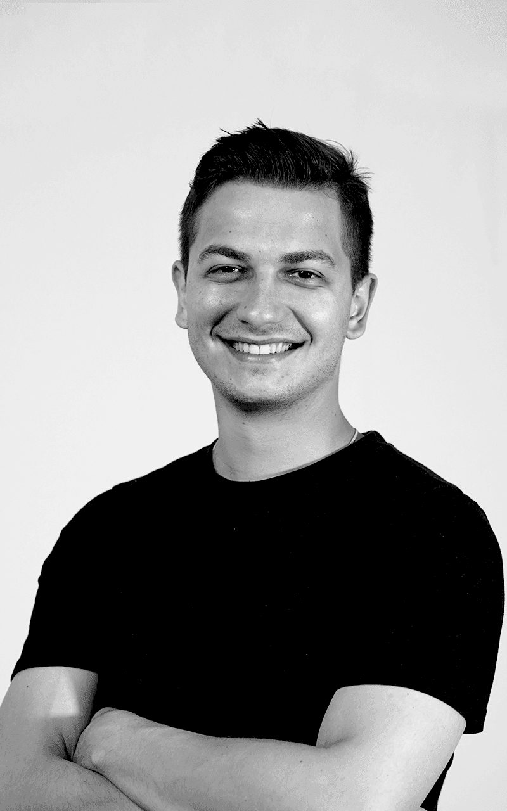

The dream team
Por detrás de cada projeto, há uma equipa.
Deslizar
A nossa visão
Acreditamos que uma boa marca não é decoração. É a solução para problemas reais.
Ao trabalhar com empresas e profissionais de várias áreas, percebemos que muitas marcas não conseguem comunicar o seu verdadeiro valor, por falta de uma identidade clara e de uma estratégia consistente.
Criámos a CultureOn para resolver esse problema: pensamento estratégico, design com propósito e vídeo, a trabalhar juntos para que as marcas comuniquem com clareza e cresçam.
Como trabalhamos
Primeiro perceber.
Depois produzir.
Quatro passos, sempre pela mesma ordem. O primeiro nunca é saltado.
-
01
Clarificar
Estratégia
Percebemos o negócio antes de falar de comunicação. Sais com decisões tomadas, escritas e aplicáveis. É o ponto de partida de todos os nossos projetos.
-
02
Vídeo
Produção
Da ideia à edição final, vídeo que conta a tua história, mostra o teu valor e está alinhado com a estratégia da tua marca.
-
03
Design
Identidade
Design com propósito, que resolve problemas e torna a tua marca reconhecível e coerente em todos os pontos de contacto.
-
04
Resultado
Switch ON
Uma marca clara, coerente e pronta para crescer. Estratégia, design e vídeo a trabalhar juntos para trazer os clientes certos.
Os visionários
Somos 4 pessoas.
Falas sempre connosco.
Uma equipa pequena, focada na clareza, no rigor e no design com significado. Quando um projeto pede mais mãos, juntamos colaboradores de confiança.
-

O Estratega
Cristian Briceag
Estratégia e Gestão de Projeto
Posicionamento, estratégia e relação com clientes. Diretor de Operações da MyPolis, do arranque a uma equipa de 30 pessoas. Formação em Direito e Fiscalidade.
-

O Criativo
João Justino
Design e Direção Criativa
Nove anos de experiência em Design de Produto e Comunicação, com dezenas de projetos e clientes na Europa. Mestre pela Aalto, na Finlândia, com experiência de ensino como docente convidado na Universidade de Évora.
-

O Mago do Vídeo
João “Vagas” Martins
Vídeo, Edição e Motion
Captação, realização e edição. Integrou a equipa de produção “JungleCorner”, vencedora de Bronze em Cannes Lions 2024.
-

Ponta de Lança das Vendas
David Briceag
Gestão de Clientes e Sales
Especialista em aquisição de clientes e pacotes de venda, focado no imobiliário. Vários anos em gestão e hotelaria, com passagens por grupos internacionais em Inglaterra e no Dubai.
Perguntas & respostas
Antes de começar.
Tudo o que precisas de saber antes de começar um projeto com a CultureOn.
Que serviços oferecem?
Três soluções: Clarificar (estratégia e posicionamento), Construir (branding e presença digital) e Crescer (comunicação contínua). E Produção, para necessidades concretas de vídeo, fotografia, design ou motion. Não precisas de saber por onde começar: é para isso que serve a primeira conversa.
Com que tipo de clientes trabalham?
Empresas, marcas e profissionais que querem comunicar melhor: de negócios locais e marcas de produto a empresas industriais e profissionais que querem construir a sua marca pessoal.
Como começamos?
Envia-nos uma mensagem com a tua ideia. Marcamos uma primeira conversa para conhecer o teu negócio e objetivos e, a partir daí, apresentamos uma proposta à tua medida. Todos os projetos arrancam com o Clarificar, para tomarmos as decisões certas antes de criar.
Trabalham com negócios que estão a começar?
Sim. Ajudamos marcas novas a nascer com uma base sólida, da estratégia à identidade visual. É nesta fase que o Clarificar faz mais diferença: tomar as decisões certas desde o início poupa tempo e dinheiro mais tarde.
Quanto custa?
Depende do âmbito, por isso não publicamos preços. Depois da primeira conversa, recebes uma proposta com âmbito, prazos e investimento. Na Produção, o orçamento é por meia jornada, jornada ou projeto.